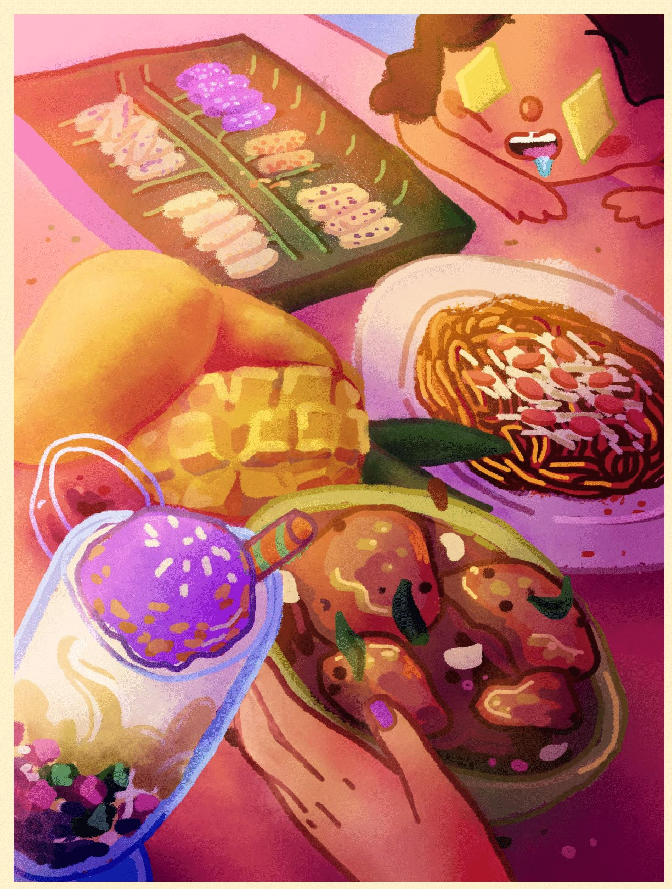
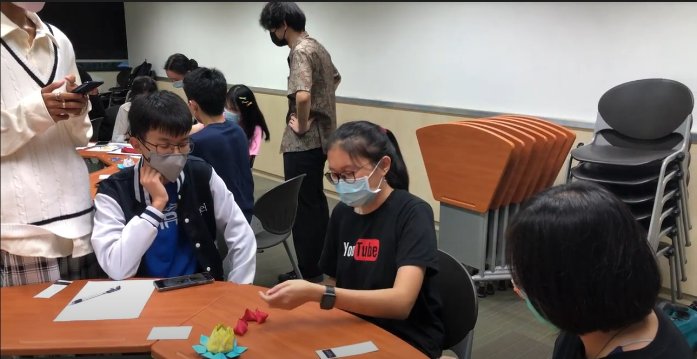
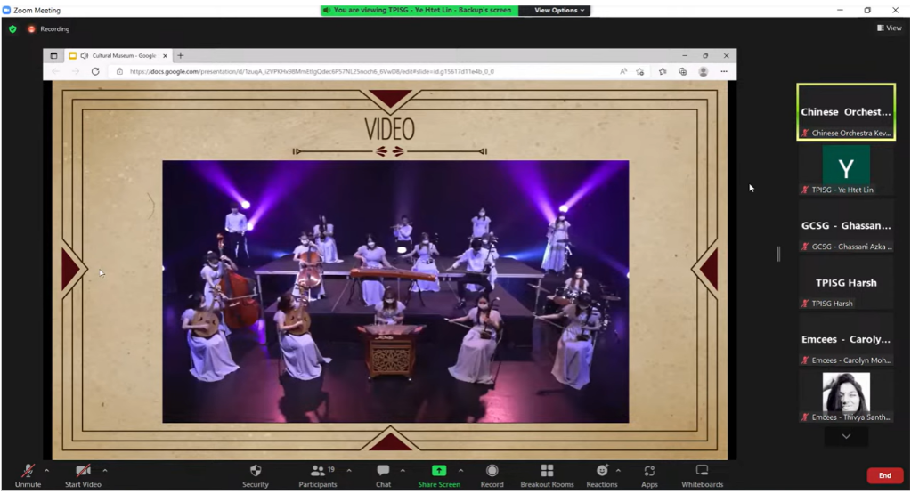

More Activities by the Author
Among the various activities that the author has organized, some of the events are highlighted below, although not all of them are directly related to cultural integration. Nevertheless, they are all related to culture.
Science Through Cuisine
Initiated by Ye Htet Lin (Brian), this project aims to learn about the science behind cooking of different cuisines from ASEAN countries. This is a collaboration event between TP International Students Group (TPISG) and Food Interest Group (FIG). Several cuisines are displayed and the scientific process behind the cooking is discussed in each of the sessions. Some fun Kahoot! quizzes are also included for more interaction. The first session was the most successful among all the STC events, with over 180 participants. This event aims to bring more cultural awareness, but not too effective for cultural integration. Modifications could be done to the event to also verify for Cultural Integration aspect.

Creative Cultural Challenge
This is a visual arts competition, collaboration between TPISG and TP Visual Arts and Writing Club (TPVAWC), whereby the participants are to create their own visual arts about their own culture while also providing a short write up that reflects their experience with their culture. There were given Achievement SEAL Points for their submissions. With over 70+ participants, the judges were amazed by the wonderful artistic pieces of work! This event could be modified in a way such that the participants can try to imagine what it feels like to be from other cultures and create visuals about such imagination. This will assist cultural inclusion and integration by ensuring a person can empathize the aspects of other cultures, in the hopes of one day welcoming and integrating those cultures into their daily lives.
The attached visual is from Awitan Jessiah Marielle Bides (2002815E).

The attached visual is from Awitan Jessiah Marielle Bides (2002815E).
S-Cape!
An escape room event initially proposed by Goh Zhi Wei (2000470A), and organized by Brian, Harsh Kunal (TPISG Head of Admin AY2022-23), and Goh Zhi Wei, this event is further modified to include culture-related puzzles and activities to escape the room! Some games include the Malay 5 stones games, using cultural knowledge to guess the location of the images, etc. It is a collaboration between TPISG and Global Connect Student Group (GCSG), and there were a total of 64 participants! This event could be modified so that it will engage participants to learn about other cultures' fun activities and probably integrate them into their daily lives as well.

Virtual Cultural Museum
The very own idea of Brian, this event is a collaboration between 9 CCAs (TPISG, Japanese Cultural Group, Global Connect Student Group, Malay Dance Group, Indian Dance Group, Chinese Orchestra, TP Emcees, Toastmasters and Visual Arts and Writing Club). The CCAs come together to showcase their cultural and relevant abilities, and this event is rated 4/5 for cultural integration effectiveness! With over 600+ participants, this has been the most successful event of Brian's 2 years presidency in TPISG.
